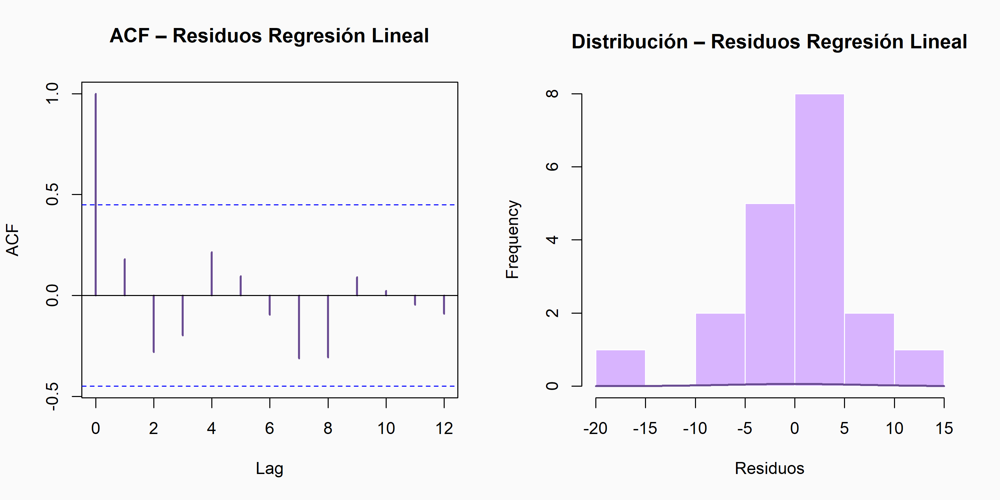
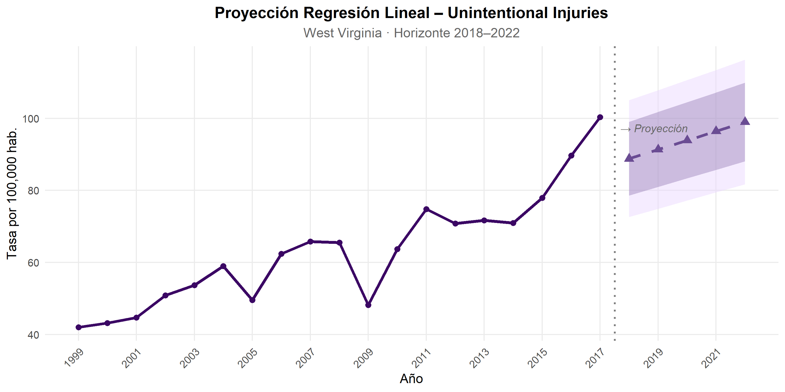

Modelo 3 – Regresión Lineal con Tendencia Temporal
La regresión lineal con tendencia temporal (OLS-Trend) es el modelo de referencia más simple para series con tendencia monotónica. Asume que la tasa de mortalidad es una función lineal del tiempo:
\[\hat{y}_t = \beta_0 + \beta_1 \cdot t + \varepsilon_t\]
donde \(t = 1, 2, ..., 19\) indexa los años 1999–2017. Su inclusión en la comparación cumple una función metodológica específica: constituye el benchmark mínimo.
tiempo_hist <- seq_along(serie_wv_acc) # 1:19
modelo_lm <- lm(serie_wv_acc ~ tiempo_hist)
cat("=== Modelo Regresión Lineal ===\n")## === Modelo Regresión Lineal ===##
## Call:
## lm(formula = serie_wv_acc ~ tiempo_hist)
##
## Residuals:
## Min 1Q Median 3Q Max
## -17.755 -3.853 1.440 3.914 14.029
##
## Coefficients:
## Estimate Std. Error t value Pr(>|t|)
## (Intercept) 38.0211 3.3110 11.483 1.97e-09 ***
## tiempo_hist 2.5395 0.2904 8.745 1.06e-07 ***
## ---
## Signif. codes: 0 '***' 0.001 '**' 0.01 '*' 0.05 '.' 0.1 ' ' 1
##
## Residual standard error: 6.933 on 17 degrees of freedom
## Multiple R-squared: 0.8181, Adjusted R-squared: 0.8074
## F-statistic: 76.47 on 1 and 17 DF, p-value: 1.064e-07##
## === Métricas de ajuste en muestra ===resid_lm <- residuals(modelo_lm)
rmse_lm <- sqrt(mean(resid_lm^2))
mae_lm <- mean(abs(resid_lm))
mape_lm <- mean(abs(resid_lm / serie_wv_acc)) * 100
cat("RMSE:", round(rmse_lm, 4), "\n")## RMSE: 6.5581## MAE: 5.0335## MAPE: 7.9567 %El modelo estima un intercepto de 38.02 y una pendiente de 2.54 puntos por año (p < 0.001), explicando el 81.8% de la varianza histórica (R² = 0.818). El RMSE en muestra es 6.56 y el MAPE 7.96%, métricas similares a ETS, lo que refleja que ambos modelos capturan esencialmente la misma tendencia lineal global.
Diagnóstico de residuos – Regresión Lineal
El diagnóstico de residuos en regresión aplicada a series de tiempo incluye obligatoriamente la prueba de Ljung-Box, que evalúa si los residuos presentan autocorrelación serial, la violación crítica del supuesto OLS en este contexto.
# Convertir residuos a objeto ts para checkresiduals
resid_lm_ts <- ts(resid_lm, start = 1999, frequency = 1)
par(mfrow = c(1, 2), bg = "#FAFAFA")
# ACF de residuos
acf(resid_lm_ts,
main = "ACF – Residuos Regresión Lineal",
col = "#6A4C93", lwd = 2)
hist(resid_lm, breaks = 8,
main = "Distribución – Residuos Regresión Lineal",
xlab = "Residuos", col = "#D8B4FE", border = "white")
curve(dnorm(x, mean = mean(resid_lm), sd = sd(resid_lm)),
add = TRUE, col = "#6A4C93", lwd = 2)
par(mfrow = c(1, 1))
# Prueba de Ljung-Box sobre residuos
lb_lm <- Box.test(resid_lm_ts, lag = 4, type = "Ljung-Box")
cat("\n=== Ljung-Box – Residuos Regresión Lineal ===\n")##
## === Ljung-Box – Residuos Regresión Lineal ===cat("Q* =", round(lb_lm$statistic, 4),
"| df =", lb_lm$parameter,
"| p-value =", round(lb_lm$p.value, 4), "\n")## Q* = 4.7703 | df = 4 | p-value = 0.3117cat(ifelse(lb_lm$p.value < 0.05,
"⚠ Autocorrelación significativa en residuos → supuesto OLS violado",
"✔ No se detecta autocorrelación significativa"), "\n")## ✔ No se detecta autocorrelación significativaProyección – Regresión Lineal (2018–2022)
tiempo_proj <- data.frame(
tiempo_hist = (length(serie_wv_acc) + 1):(length(serie_wv_acc) + horizonte)
)
pred_lm_ic <- predict(modelo_lm, newdata = tiempo_proj,
interval = "prediction", level = 0.95)
pred_lm_ic80 <- predict(modelo_lm, newdata = tiempo_proj,
interval = "prediction", level = 0.80)
df_fut_lm <- data.frame(
year = anios_fut,
valor = pred_lm_ic[, "fit"],
lo95 = pred_lm_ic[, "lwr"],
hi95 = pred_lm_ic[, "upr"],
lo80 = pred_lm_ic80[, "lwr"],
hi80 = pred_lm_ic80[, "upr"]
)
ggplot() +
geom_ribbon(data = df_fut_lm,
aes(x = year, ymin = lo95, ymax = hi95),
fill = "#E9D5FF", alpha = 0.45) +
geom_ribbon(data = df_fut_lm,
aes(x = year, ymin = lo80, ymax = hi80),
fill = "#6A4C93", alpha = 0.30) +
geom_line(data = df_hist_ets,
aes(x = year, y = valor),
color = "#3B0764", linewidth = 1.3) +
geom_point(data = df_hist_ets,
aes(x = year, y = valor),
color = "#3B0764", size = 2) +
geom_line(data = df_fut_lm,
aes(x = year, y = valor),
color = "#6A4C93", linewidth = 1.3, linetype = "dashed") +
geom_point(data = df_fut_lm,
aes(x = year, y = valor),
color = "#6A4C93", size = 3, shape = 17) +
geom_vline(xintercept = 2017.5, linetype = "dotted",
color = "gray50", linewidth = 0.8) +
annotate("text", x = 2017.7, y = max(serie_wv_acc) * 0.97,
label = "→ Proyección", hjust = 0,
color = "gray40", fontface = "italic", size = 3.5) +
scale_x_continuous(breaks = seq(1999, 2022, by = 2)) +
scale_y_continuous(labels = comma) +
labs(
title = "Proyección Regresión Lineal – Unintentional Injuries",
subtitle = "West Virginia · Horizonte 2018–2022",
x = "Año", y = "Tasa por 100,000 hab."
) +
theme_minimal(base_size = 12) +
theme(
plot.title = element_text(face = "bold", hjust = 0.5),
plot.subtitle = element_text(hjust = 0.5, color = "gray40"),
axis.text.x = element_text(angle = 45, hjust = 1),
panel.grid.minor = element_blank()
)
Tabla de valores proyectados
data.frame(
`Año` = 2018:2022,
`Predicción` = round(pred_lm_ic[, "fit"], 1),
`IC 80% inf.` = round(pred_lm_ic80[, "lwr"], 1),
`IC 80% sup.` = round(pred_lm_ic80[, "upr"], 1),
`IC 95% inf.` = round(pred_lm_ic[, "lwr"], 1),
`IC 95% sup.` = round(pred_lm_ic[, "upr"], 1),
check.names = FALSE
) %>%
kable(
caption = "Valores proyectados Regresión Lineal – Unintentional Injuries WV (2018–2022)",
align = rep("c", 6)
) %>%
kable_styling(bootstrap_options = c("striped", "hover"),
full_width = TRUE, font_size = 11) %>%
row_spec(0, background = "#6A4C93", color = "white", bold = TRUE)| Año | Predicción | IC 80% inf. | IC 80% sup. | IC 95% inf. | IC 95% sup. |
|---|---|---|---|---|---|
| 2018 | 88.8 | 78.6 | 99.1 | 72.6 | 105.0 |
| 2019 | 91.3 | 81.0 | 101.7 | 74.9 | 107.8 |
| 2020 | 93.9 | 83.3 | 104.5 | 77.2 | 110.6 |
| 2021 | 96.4 | 85.7 | 107.2 | 79.4 | 113.4 |
| 2022 | 99.0 | 88.0 | 109.9 | 81.7 | 116.3 |
La regresión lineal proyecta valores muy similares a ETS: desde 88.8 en 2018 hasta 99.0 por 100,000 habitantes en 2022. La convergencia entre ambos modelos en las proyecciones puntuales no es casual; ambos capturan la misma tendencia lineal global de la serie, aunque desde supuestos distintos. Sus intervalos de confianza al 95% (72.6–105.0 en 2018; 81.7–116.3 en 2022) son para una serie I(1) sin diferenciar: el modelo OLS subestima la incertidumbre real al no incorporar la dependencia temporal. Esta limitación, invisible en las proyecciones puntuales, es determinante en la selección del modelo final y se desarrolla en la siguiente sección.